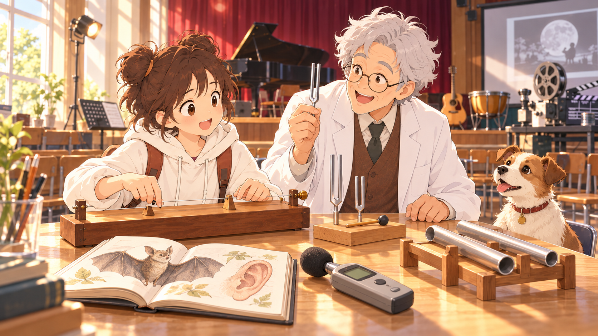

波動與聲音・單元3.3・第三輪
讓整個單元進入畫面：五張新候選
這輪增加不同聲源、聆聽對象與生活情境。五張都以「校園聲音探索」涵蓋較多學習內容，再透過場景、人物位置和構圖重心提供不同選擇。
五張均可見琴弦箱、長短管、音叉、小狗與蝙蝠／耳朵圖鑑、聲級計，以及演出和電影活動線索。
使用者已選定C02「聲音體驗市集」，並採用於正式單元3.3首頁。本頁保留C01～C05原圖供參考。


畫面元素，如何代表七個學習區塊？
| 學習內容 | 圖片中的聲源、道具或情境 | 下方接續的內容 |
|---|---|---|
| ① 響度與振幅 | 撥弦、敲擊與聆聽 | 同一聲源的大聲與小聲，接到下方固定頻率的振幅比較。 |
| ② 音調與頻率 | 不同尺寸音叉、長短不同的發聲器材 | 由聲音高低的差別，接到頻率與振動次數。 |
| ③ 琴弦的音調 | 有琴橋與調整裝置的琴弦箱 | 有效弦長、張力與音調。 |
| ④ 空氣柱的音調 | 同類、不同長度的直通開口管 | 空氣柱長短與音調。 |
| ⑤ 音色與波形 | 琴弦、管子、音叉及演出樂器 | 不同聲源的聲音特色；精確波形留在本區操作。 |
| ⑥ 聽覺範圍 | 人物、小狗聆聽，蝙蝠與耳朵圖鑑 | 人耳與動物的聽覺範圍、超聲波。 |
| ⑦ 分貝的辨讀 | 聲級計、祖孫交談、舞台與電影活動線索 | 由生活情境延伸聲級資料；對應一般交談、音樂會與電影院的案例。 |
| 結尾小測 | 整個校園聲音探索展示 | 協助展示台設定指定的頻率、振幅與音色。 |
首圖提供故事與觀察線索；精確頻率、振幅、波形及聲級資料，在學習區塊中比較。狗與人是在聆聽一般聲音，圖鑑則帶入蝙蝠的高頻聽覺；聲級計提供分貝的情境線索。